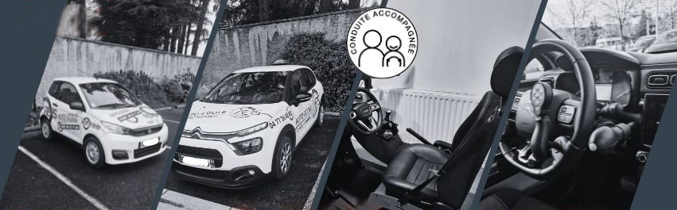

Permis B · six formations
Le permis voiture, à votre rythme.
Boîte manuelle ou automatique, conduite accompagnée dès 15 ans, conduite supervisée après 18 ans, véhicule adapté, voiture sans permis. Six chemins vers le même permis — et un choix qui mérite deux minutes de réflexion.

Le choix qui compte vraiment
Classique, accompagnée ou supervisée ?
C'est la question que les familles nous posent le plus souvent, et la réponse ne tient pas au prix : elle tient au temps disponible et à l'âge. Voici les trois chemins côte à côte.
| Permis B classique | Conduite accompagnée | Conduite supervisée | |
|---|---|---|---|
| À partir de | 15 ansinscription, examen dès 17 ans | 15 ansexamen dès 17 ans | 18 ansaprès la formation initiale |
| Formation | 20 h minimum | 20 h, puis un an minimum avec un accompagnateur | 20 h et le code, puis conduite avec un proche |
| Taux de réussite | 57,8 % | 74,6 %filière AAC | — |
| Permis probatoire | 3 ans | 2 ans | 3 ans |
| Assurance jeune conducteur | Tarif plein | Moins chère | Tarif plein |
| C'est pour vous si… | Vous voulez votre permis rapidement. | Vous avez le temps, un accompagnateur, et vous voulez vraiment savoir conduire. | Vous manquez de confiance, ou vous venez d'échouer à l'examen pratique. |
Taux de réussite nationaux 2018 cités sur notre page Permis et formations : 57,8 % en formation traditionnelle, 74,6 % pour les candidats issus de la filière AAC.
Comment se passe la conduite accompagnée
Deux rendez-vous pédagogiques, et beaucoup de kilomètres.
Vous préparez le code, vous faites vos heures avec nous jusqu'au niveau requis, puis nous présentons ce niveau à votre accompagnateur lors d'un rendez-vous préalable. Vous déclarez le véhicule et les accompagnateurs à votre assurance, et l'apprentissage commence.
Nos formations auto
Six formations, en détail
Permis B — boîte manuelle
Citroën C3Le permis de catégorie B permet la conduite de tous les véhicules de tourisme et des utilitaires dont le poids total en charge ne dépasse pas 3,5 tonnes. L'inscription est possible dès 15 ans, la formation pratique est de 20 h minimum, et lorsque vous êtes prêt nous vous proposons une date d'examen dès vos 17 ans.
Permis B — boîte automatique
Citroën C3La formation initiale est alors de 13 h minimum. Le permis est restreint à la conduite d'un véhicule à boîte automatique — et si vous en ressentez l'envie ou le besoin, une formation de 7 h suffit ensuite pour l'étendre à la boîte mécanique.
Bon à savoir : pour les élèves en situation de handicap ou après une maladie, c'est la conduite sur véhicule adapté qui s'applique — voir plus bas.
Conduite accompagnée (AAC)
Citroën C3Une formation graduelle : vous apprenez les bases à l'école de conduite dès 15 ans, puis vous vous perfectionnez avec un accompagnateur — généralement un parent — avant de passer votre permis.
- Un taux de réussite nettement supérieur : environ 74,6 % contre 57,8 % en formation traditionnelle
- Une expérience de la route qu'un élève en formation classique ne peut pas atteindre — il faudrait trop d'heures de conduite pour l'égaler
- Des situations de conduite variées, vécues et maîtrisées avec les conseils de l'accompagnateur
- Une assurance jeune conducteur moins chère, et un permis probatoire de 2 ans au lieu de 3
- Le code à 15 ans et le permis à 17 ans : pas d'emploi du temps à jongler pendant les études supérieures
Conduite supervisée
Citroën C3C'est l'équivalent de la conduite accompagnée pour les plus de 18 ans. Elle est possible après la formation initiale de 20 h et l'obtention du code — ou après un échec à l'épreuve de conduite, pour améliorer ses acquis et mieux préparer la présentation suivante.
- Un apprentissage moins stressant : vous conduisez beaucoup plus d'heures, en compagnie d'un proche
- Recommandée si vous manquez de confiance en vous
- Comme l'AAC, elle permet d'aborder les différentes saisons
Conduite sur véhicule adapté (PMR)
Citroën C3 aménagéeLes examens restent les mêmes qu'en permis B. Une visite médicale détermine l'aptitude à la conduite et le type d'équipements nécessaires au véhicule — nous adaptons ensuite la formation à chacun, selon les besoins.
Voir les équipements du véhicule →Voiture sans permis (AM 4 roues)
Quadricycle légerLe BSR, ou permis AM, n'est pas un examen du permis de conduire mais une formation théorique et pratique obligatoire pour conduire un quadricycle léger à moteur — couramment appelé voiture sans permis — à partir de 14 ans.
À savoir : l'obtention de l'ASSR de 1er ou 2e niveau, ou de l'ASR, est impérative pour valider la partie théorique.
Conduite adaptée
Un véhicule aménagé, et deux enseignants formés pour ça.
Si vous avez déjà le permis et que vous devez adapter un équipement suite à une maladie ou un handicap, une régularisation devant un inspecteur suffit à confirmer la bonne utilisation de cet équipement.
Bertrand Ponchier et Grégory Chauve sont référents handicap et spécialistes des troubles DYS. Il suffit de nous le dire à l'inscription.
Rencontrer l'équipe →Les équipements de notre C3
- Accélérateur avec système de pédalier inversé — accélérateur à gauche
- Accélérateur avec système gâchette, à gauche ou à droite
- Freinage à la main par perche, à gauche ou à droite
- Direction adaptée avec boule au volant et satellite — clignotants, feux, klaxon, essuie-glaces — main droite ou main gauche
Toujours hésitant entre les trois ?
Répondez à quelques questions : on vous dit quelle formation correspond à votre âge et à votre situation, quels papiers apporter, et à quelles aides vous avez droit.